Mandale zamówione przez klientów
Autorskie mandale Ewy Miłek, malowane w ostatnich latach na indywidualne zamówienie klientów.
{kind=link}
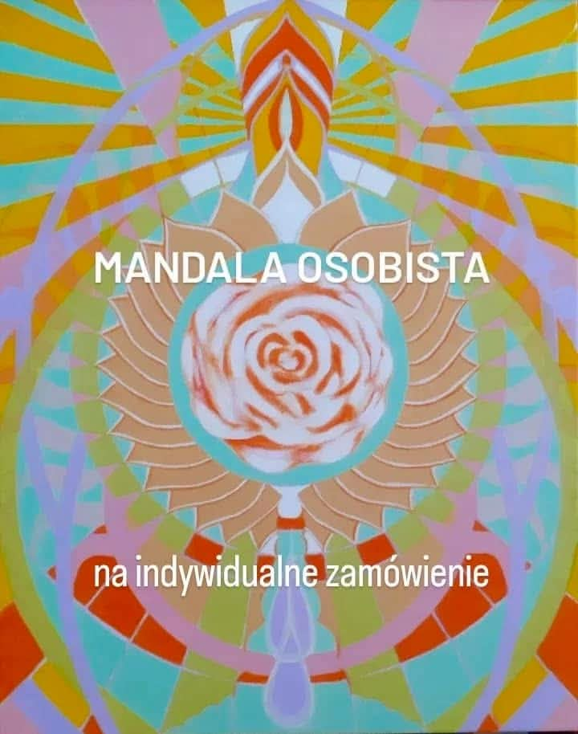
Mandala z różą{kind=link}
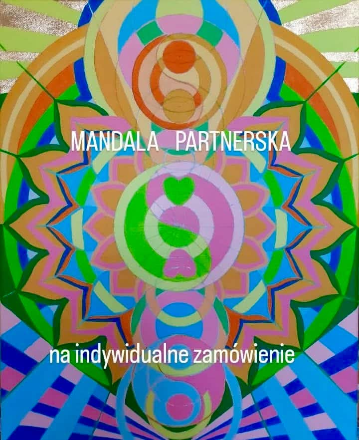
Mandala partnerska{kind=link}
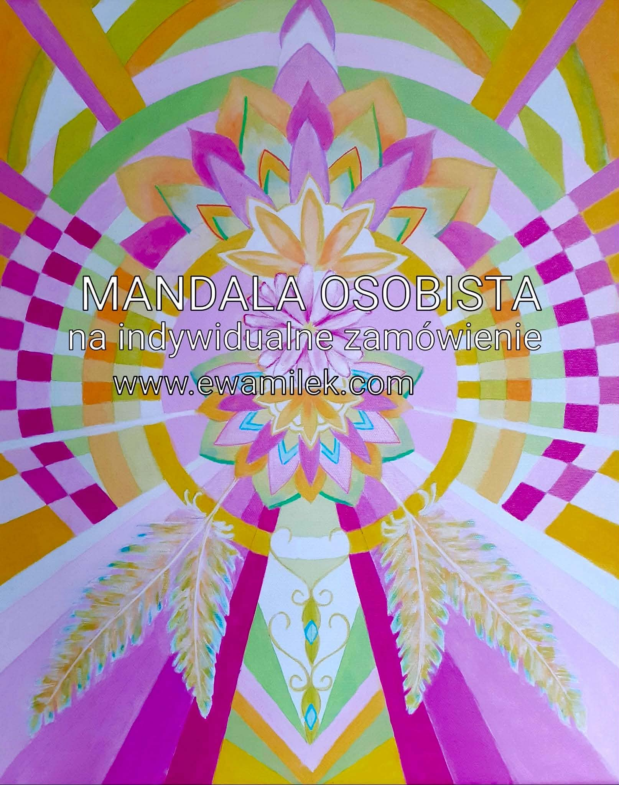
Mandala fioletowo-zielona{kind=link}
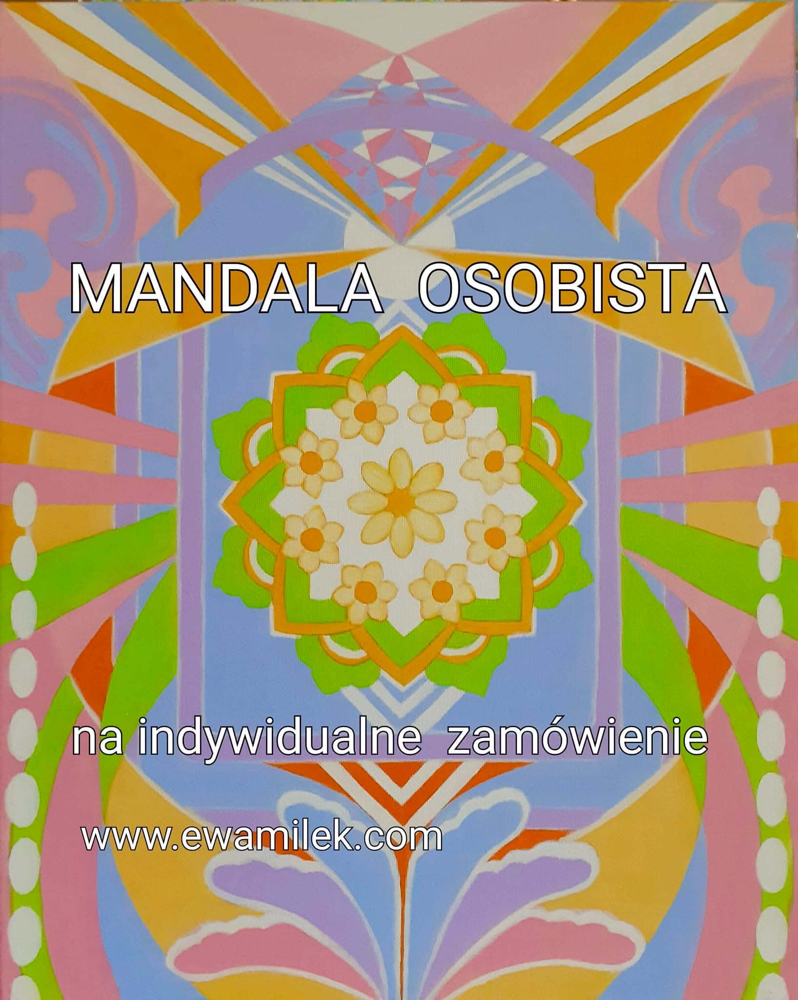
Mandala ze złotym kwiatem{kind=link}
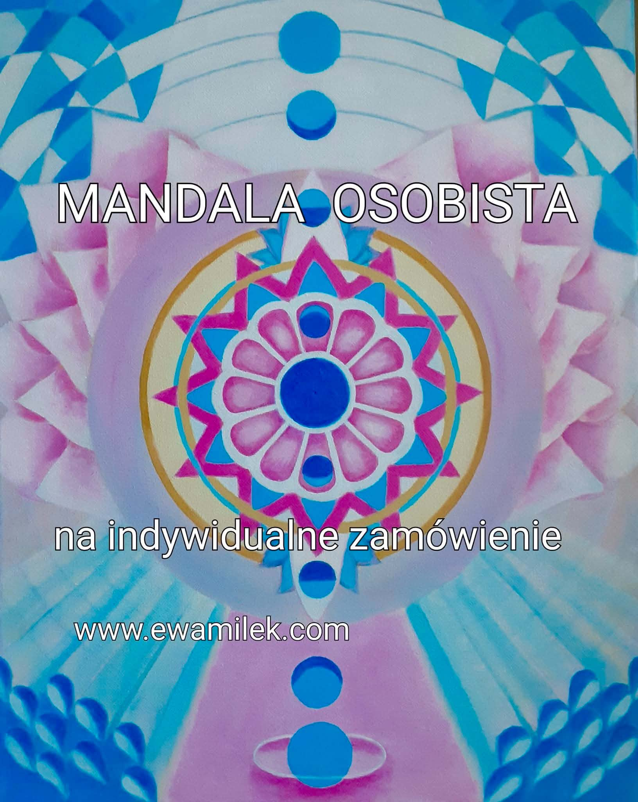
Mandala błękitna{kind=link}
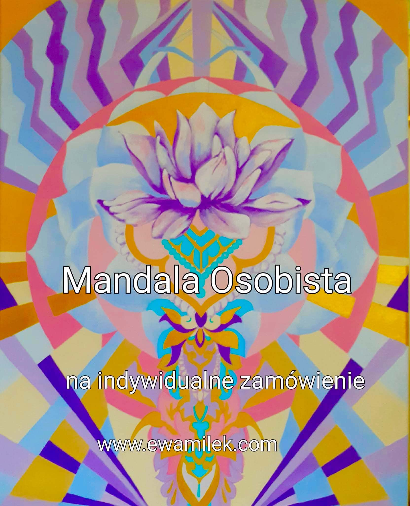
Mandala z lotosem{kind=link}
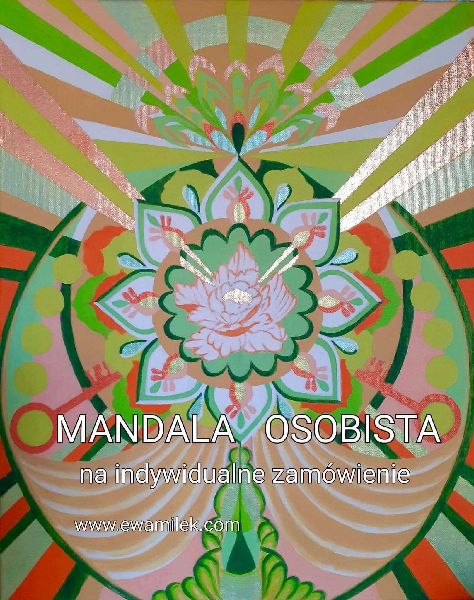
Mandala zielona{kind=link}
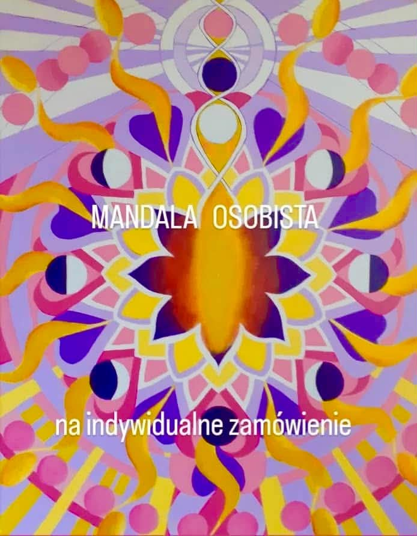
Mandala słoneczna{kind=link}
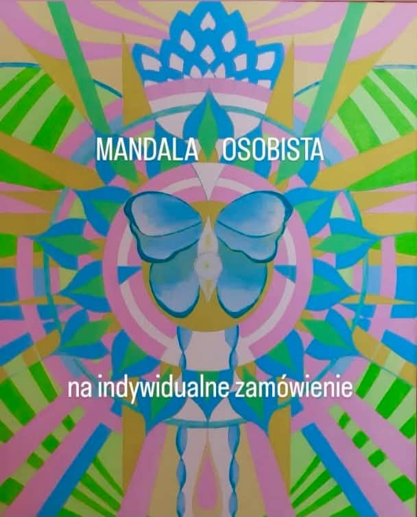
Mandala z motylem{kind=link}
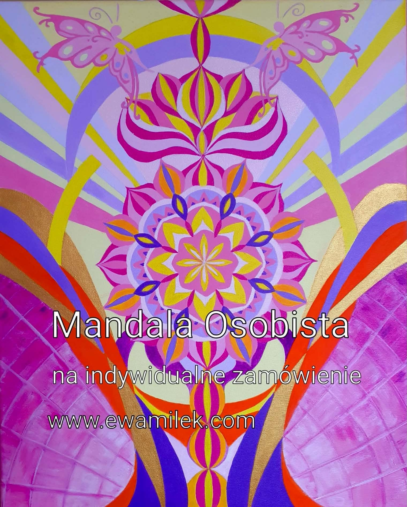
Mandala różowo-fioletowa{kind=link}
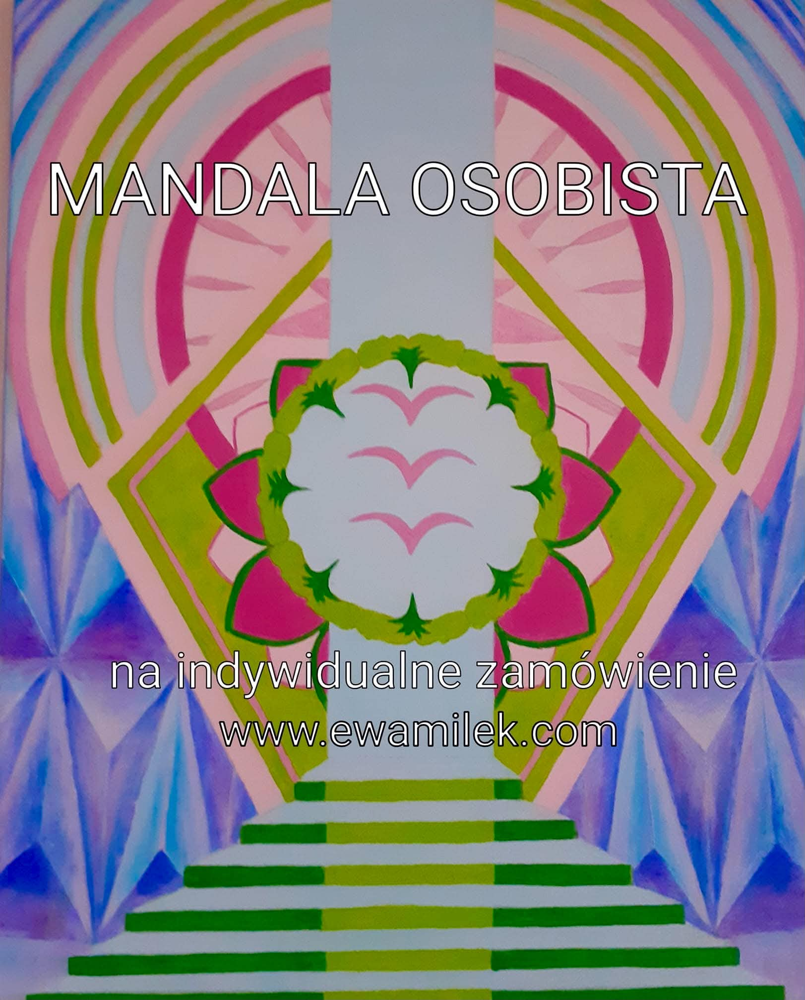
Mandala ze schodami{kind=link}
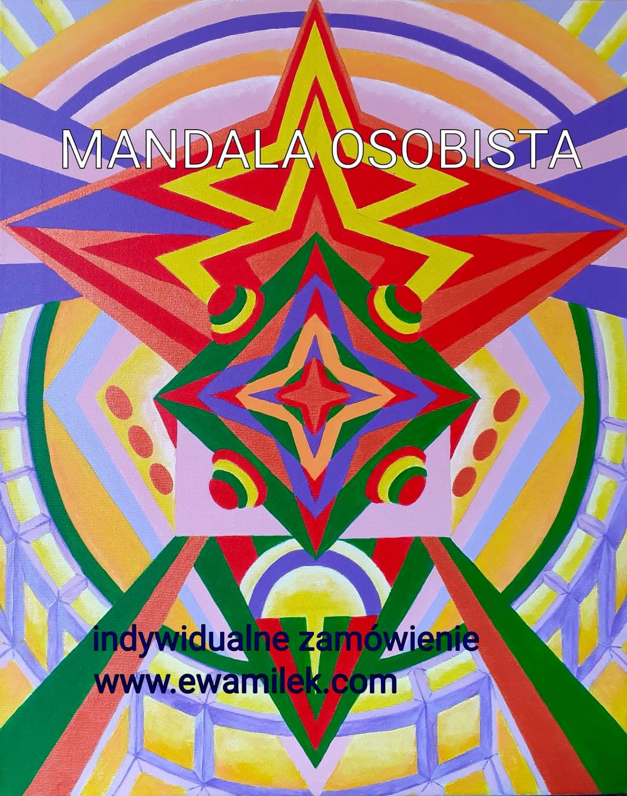
Mandala z gwiazdą{kind=link}
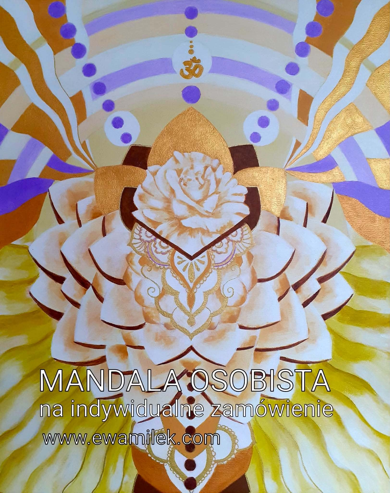
Mandala złoto-biała{kind=link}
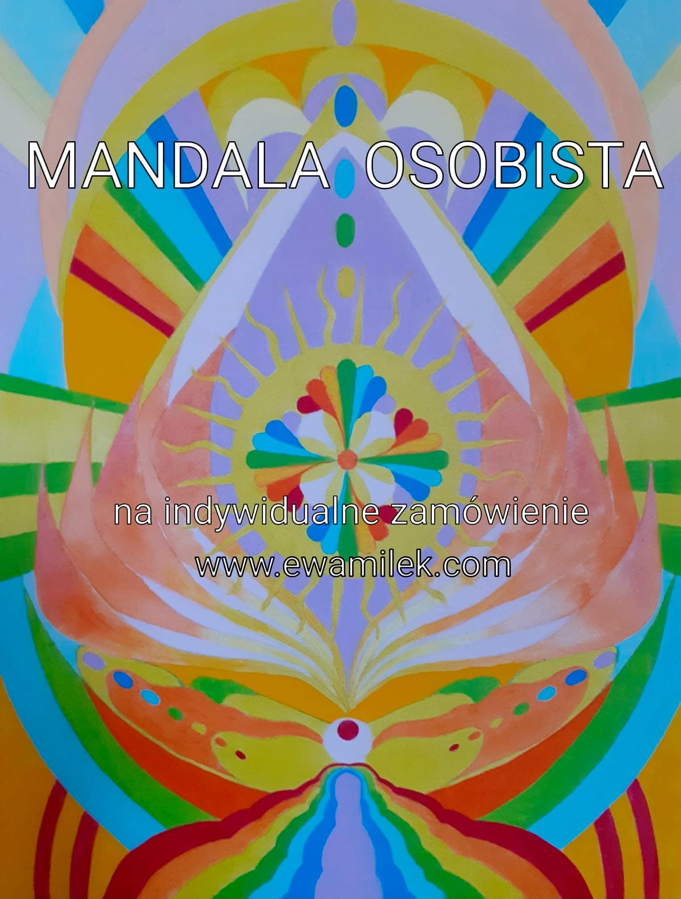
Mandala tęczowaMandala osobista, partnerska, ślubna, małżeńska i intencjonalna
Mandale tworzone są na indywidualne zamówienie. To obrazy o wysokich wibracjach, które wspierają rozwój, harmonizują przestrzeń i pomagają w głębszym kontakcie ze sobą.
✦ Mandala Osobista — na indywidualne zamówienie
Informacje techniczne: Mandala tworzona jest na płótnie 40×50 farbami akrylowymi, techniką nakładania kilku warstw (około 6 warstw). Czas tworzenia to około 80 godzin. Dołączony jest opis około 2 stron.
Cena Mandali Osobistej: 3500,00 zł + koszty wysyłki.
Mandala Osobista na zamówienie jest skuteczną drogą do zrozumienia i poznawania siebie. Mandale wyrażają wysoki poziom wibracji i promieniują pozytywnie na otoczenie.
Przekaz poprzez Mandalę, którą maluję w stanie wysokiego skupienia, inspiruje i wspiera na drodze rozwoju danej osoby. Wibracje podnoszą się do wyższych poziomów energetycznych, a wokół osoby tworzy się całościowa harmonia wzrastania w pełni. Współpracujące ciała subtelne dostrajają się do orkiestry, którą tworzymy przez całe lata istnienia. Tworzy się muzyka, a dźwięki szczęścia zaczynają grać symfonię życia.
Mandala jest przekazem energetycznym, który oddziałuje na wszystkie sfery życia człowieka. Dzięki energii Mandali Osobistej można pokonać problemy emocjonalne oraz blokady uczuciowe. Patrząc na taki obraz — symbole widzi się oczami, ale odbiera się sercem i swoją wrażliwością.
Spokojne i harmonijne płynięcie energii daje możliwość otwarcia i rozkwitu w sobie cudownych wibracji danych w Mandali. Zaczyna działać proces samoregeneracji energetycznej, oczyszczenia i rozświetlenia swojej energii. Uaktywnia się kreatywność działania na różnych płaszczyznach życia.
Mandala Osobista, jako właściwy symbol indywidualizacji, odgrywa istotną rolę transformatora energii psychicznej w przebiegu rozwoju osobowości. Umożliwia rodzaj komunikacji między świadomością a nadświadomością. Może być rozumiana jako indywidualny drogowskaz kształtujący osobowość.
Zainteresowana? ✉️ Napisz do mnie: milekewa@o2.pl✦ Mandala Partnerska / Ślubna / Małżeńska
Idea związku opiera się na sferze uczuć, pragnień i wzajemnych oczekiwań. Mandala dla związku pomaga uwzględniać wspólne cele, wnosi harmonię w życie i wspiera we wzajemnym zrozumieniu. W Mandali ujawniają się również wspólne zadania do zrealizowania.
Subtelne energie zawarte w Mandali pomagają rozbudzić miłość i przyjaźń lub zwiększyć ich wibracje. Otwiera się przestrzeń akceptacji, szacunku oraz zaufania. Mandala tworzy odpowiedni przepływ, aby usłyszeć rzeczywiste potrzeby w relacji.
Mandala Partnerska / Ślubna / Małżeńska wnosi do relacji poczucie bezpieczeństwa i odkrywa Tajemnicę Twojego Związku.
Technika: farby akrylowe na płótnie 40×50, gotowa do powieszenia na ścianie (zamalowane boki), około 6 warstw, czas tworzenia około 80 godzin.
Cena Mandali Partnerskiej / Ślubnej / Małżeńskiej:
- 4000,00 zł + 80,00 zł przesyłka (Polska)
- 4000,00 zł + 120,00 zł przesyłka (Unia Europejska)
Dołączony jest opis Przesłania Mandali (około 2 stron) oraz jak pracować z Mandalą Partnerską.
Potrzebuję: daty urodzenia i imion, daty poznania się (lub decyzji bycia razem), a dla Mandali Ślubnej/Małżeńskiej — daty zawarcia związku małżeńskiego.
Po wpłaceniu całości kwoty czas realizacji w tej chwili około 12 tygodni.
Kontakt: ✉️ milekewa@o2.pl✦ Harmonizacja i przebudzenie kreatywności
Dzięki Mandali można w swoje życie wprowadzić harmonizację w sobie i w otoczeniu. Dzięki Mandali często ukryte dotąd potencjały twórcze mogą zacząć się ujawniać na zewnątrz. Gdy jesteś „w drodze” i szukasz swojego powołania lub celu życiowego — Mandala Osobista może Ci w tym pomóc.
W kontakcie z Mandalą Osobistą może nastąpić przebudzenie do kreatywnych obszarów, aby mieć możliwość twórczej realizacji siebie.
Mandale — obrazy i chwile tworzenia
{kind=link}
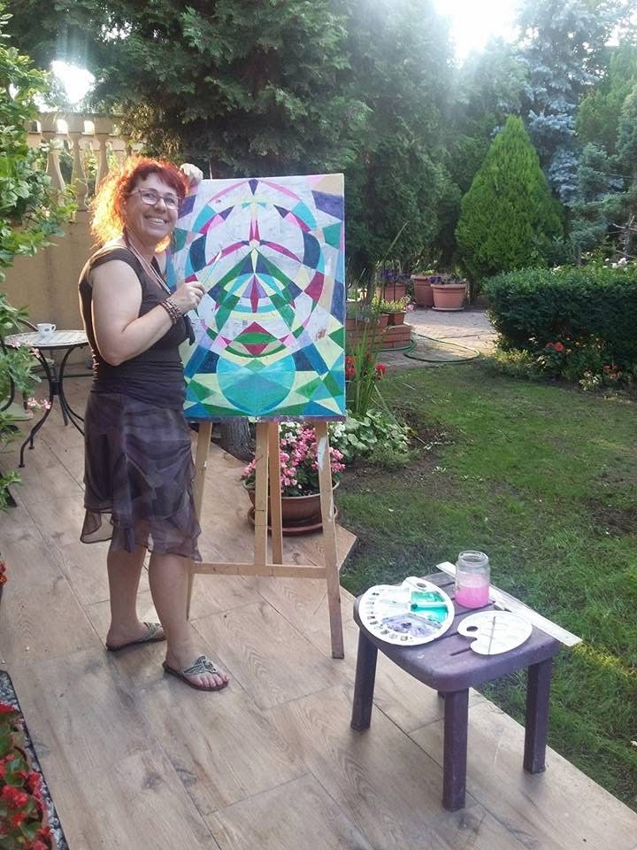
Mandala na tarasie{kind=link}
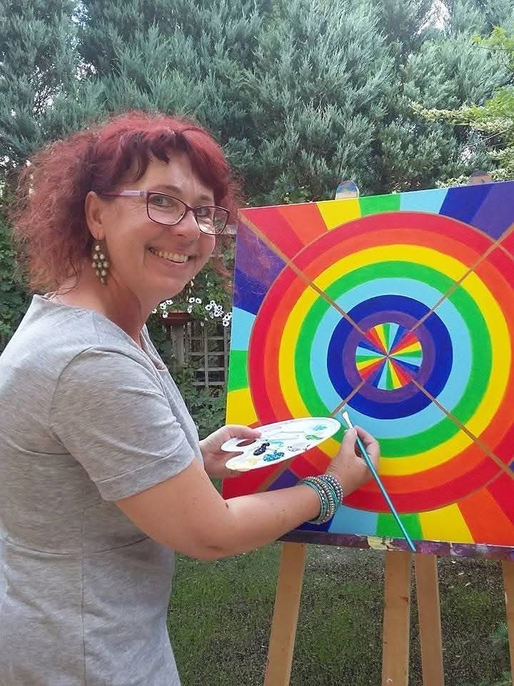
Malowanie tęczowej mandali{kind=link}
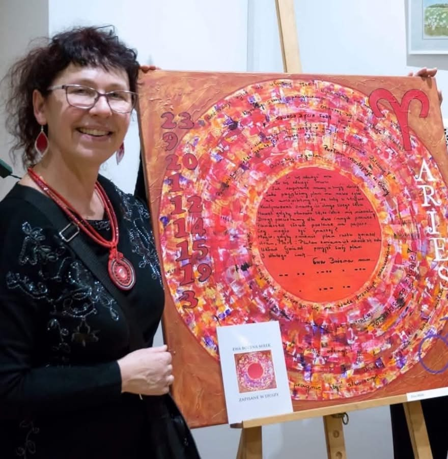
Prezentacja czerwonej mandali{kind=link}
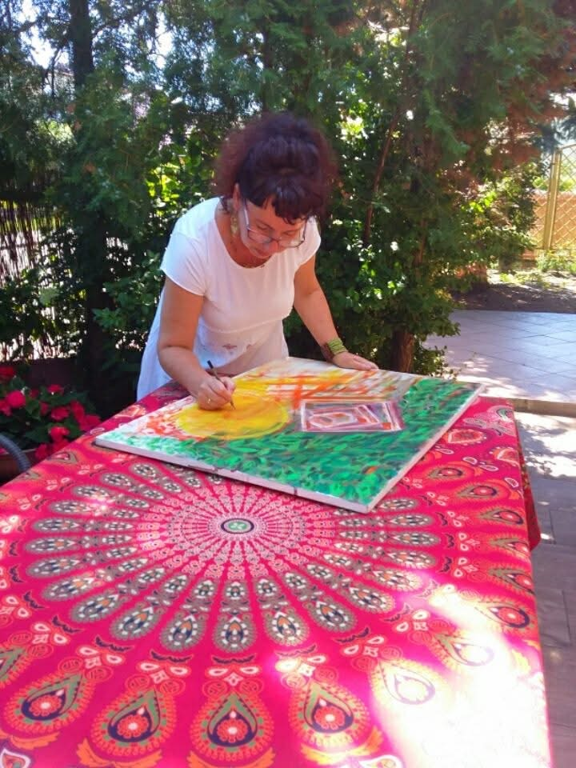
Malowanie mandali na tkaninie{kind=link}
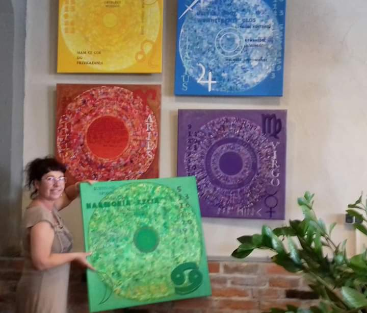
Kolekcja kolorowych mandali{kind=link}
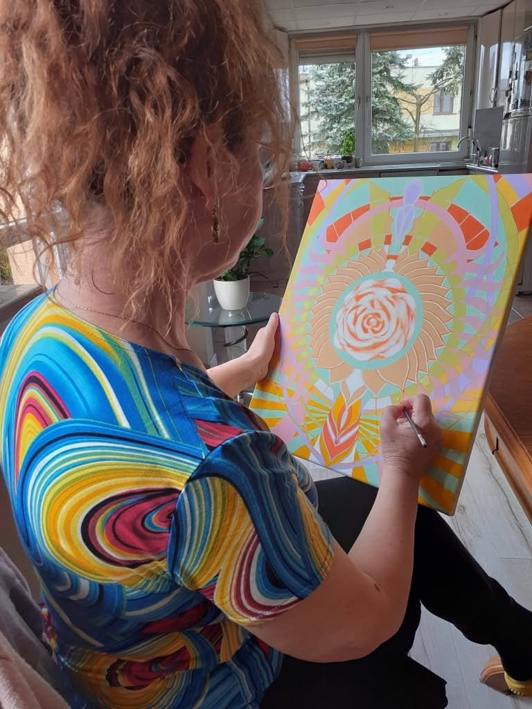
Malowanie mandali przy stole{kind=link}
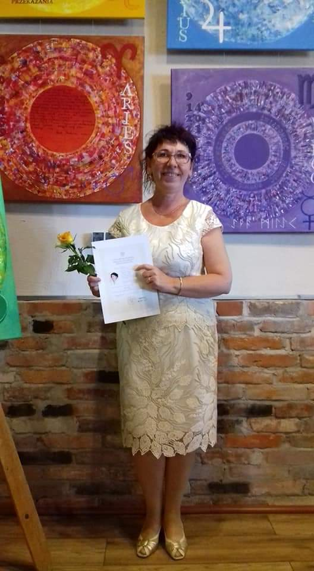
Prezentacja książki przy mandalach{kind=link}
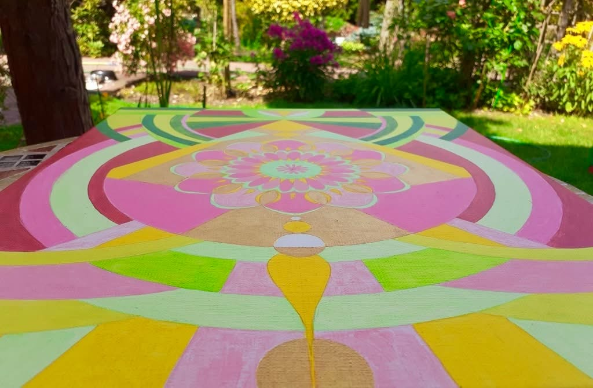
Różowa mandala w ogrodzie{kind=link}
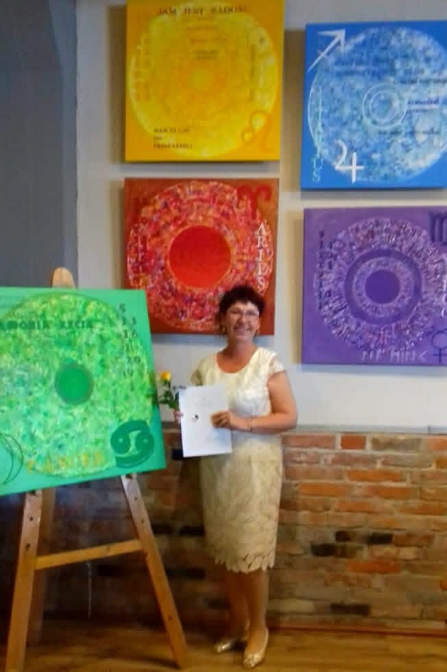
Kolekcja mandali — pełny kadr✦ Autorskie warsztaty — zapytaj o termin
WARSZTATY „Mandala Świadome Życie” — pierwszy poziom szkoły Mandali ⌄
Zapraszam Cię na autorskie spotkanie z Mandalą Świadome Życie: odkrywania w sobie piękna na różnych płaszczyznach życia. Będziemy uwalniać się od ograniczeń, poznawać symbolikę Mandali i tworzyć Mandale dla siebie. Będą medytacje i ćwiczenia na czysty przepływ i odbiór intuicji, praca na świadomości serca.
Poznasz symbolikę kolorów, kształtów i liczb oraz nauczysz się samodzielnie tworzyć Mandale. Warsztat zakończy się stworzeniem Osobistej Mandali na płótnie. Brak „umiejętności rysowania czy malowania” nie stoi na przeszkodzie — liczy się chęć do tworzenia.
Wszelkie materiały (kredki, kartki, farby, płótno i inne) są wliczone w cenę warsztatów. Gotową Mandalę i materiały teoretyczne zabierasz do domu.
Autorskie warsztaty „Tęczowa Mandala®” — arteterapia Mandalą ⌄
Mandale działają holistycznie na duszę, ciało i umysł. Tęczowa Mandala pozwala wydobyć na światło dzienne emocje, które zastały w ciele i blokują przepływ do życia w pełni szczęścia. Za pomocą Mandali można te emocje wyrazić i przepracować.
Podczas warsztatów będziemy tworzyć mandale, sięgając do zasobów wewnętrznej kreatywności. Będą medytacje, ćwiczenia na harmonizację czakr oraz dostrojenie do czystego przepływu intuicji.
Tematem przewodnim warsztatów jest Tęcza — zjawisko optyczne i meteorologiczne powstające w wyniku rozszczepienia światła. Tradycyjnie wyróżnia się kolory: czerwony, pomarańczowy, żółty, zielony, niebieski, indygo i fioletowy.
Wszystkie materiały (kredki, bloki, kartki, kleje, brokaty, farby, płótna i inne) są wliczone w cenę warsztatów.
Autorskie warsztaty „Mandala Anielska®” ⌄
Czujesz, że Anioły są obecne w Twoim życiu? Pragniesz połączenia z nimi? Chcesz rozmawiać z Aniołami? Jeśli chcesz głębszego kontaktu — zapraszam na moje warsztaty.
Dowiesz się, jak ma na imię Twój Anioł Stróż. Nauczysz się prosić Anioły o pomoc i wsparcie. Poprowadzę Cię przez wizualizacje, w których odwiedzisz eteryczne Anioły. Namalujesz Mandalę ze swoim Aniołem…
Nie musisz „umieć” malować — wystarczy chęć do tworzenia. Wszystkie materiały (kredki, farby, płótno) są wliczone w cenę warsztatu.
✦ Co to jest Mandala?
Mandala to koło — podstawowa struktura wszechświata. Motyw mandali odnajdujemy w prehistorycznych rysunkach na różnych kontynentach. Słowo „Mandala” pochodzi z sanskrytu i oznacza: cały świat, święty krąg, centrum lub koło życia. W buddyźmie tybetańskim to także punkt — sakralna przestrzeń symbolizująca pierwotne Źródło wszelkiego stworzenia.
Mandala może być diagramem wyrysowanym na ziemi, na tkaninie lub na drewnie. Czasami usypuje się ją z kolorowych piasków bądź ryżu. Bywa umieszczana na ścianach świątyń. Wykorzystywano do tworzenia mandali także kamienie szlachetne.
Najprostsza mandala ma kształt okrągły, ale może też przyjmować inne formy: gwiazdy, motywu kwiatowego, kwadratu, koła w kwadracie, wielokąta, elipsy, okręgu czy też muszli, planety, kręgów wszelkiego typu.
Więcej o Mandali na Facebooku: (możesz wstawić link do swojej strony „Mandala” na FB).
✦ Historyczne ślady Mandali
Mandale występowały w różnych kulturach na całym świecie. Znany jest magiczny krąg kamiennych kręgów, m.in. Stonehenge w Anglii — święte miejsce celtyckich druidów. W Polsce: Odry, Węsiory i Ślęża. Symbolika koła była znana m.in. Celtom, Germanom, Indianom oraz Słowianom.
Ślady mandali odnaleźć można w rysunkach naskalnych w Ameryce, Afryce i Europie. W Chinach na planie koła budowano świątynie i grobowce. Mandala pojawiała się m.in. w kulturze Azteków (kalendarz aztecki) oraz w malowidłach na ceramice z Rumunii, Ukrainy i Bałkanów.
W architekturze znane są mandaliczne układy posadzek i obrazów w kościołach, katedrach, świątyniach oraz miejscach kultu religijnego. W Tybecie do dziś żywy jest rytuał tworzenia mandali przez mnichów.
✦ Znaczenie Mandali
Tworzenie i oglądanie Mandali jest formą medytacji. Mandale ukierunkowane są na centra energetyczne (czakry) — mogą je oczyszczać, harmonizować i wzmacniać. Powstają w stanie wyciszenia i są docieraniem do Głębszych Źródeł Przekazu.
Tworzony obraz Mandali w trakcie swobodnej ekspresji umożliwia wewnętrzną przemianę i ma ogromne działanie terapeutyczne. Pierwszym, który zastosował Mandalę w psychoterapii, był szwajcarski psychiatra Carl Gustav Jung. Według jego teorii Mandala jest całością duszy — świadomością i nieświadomością.
✦ Moja przygoda z Mandalą
Malowanie Mandal obudziło się u mnie nagle. PRZEBUDZENIE… Usłyszałam słowo „MANDALA” i zapragnęłam Mandalę namalować. Od czasu namalowania pierwszej Mandali poczułam ogromną chęć do malowania następnych. Z każdą Mandalą czułam większy przypływ energii, chęci do działania, a moje ciała subtelne stawały się coraz bardziej zrównoważone.
Po rozbudzeniu we mnie tej pasji zaczęły inne osoby prosić mnie o namalowanie Mandali Osobistej. Po stworzeniu Mandali osoby te mówiły o pozytywnym oddziaływaniu na ich stan zdrowotny, fizyczny lub psychiczny.
Temat mojej Pracy Dyplomowej to: „Kolory w Mandali jako narzędzie koloroterapii“. Opierając się na literaturze, wiedzy terapeutów i własnych doświadczeniach, przedstawiłam działanie kolorów w Mandali Osobistej oraz uznałam połączenie tych wibracji za narzędzie w koloroterapii.
Kolorowa Mandala jest też sposobem komunikacji nie zawsze wyrażonych emocji. Niektóre uczucia trudno wyrazić słowami. Kolor jest uniwersalnym językiem — i właśnie w jego wibracjach ukryte są treści emocjonalne skrywane przez podświadomość.
✦ Proces tworzenia Mandali
Przed przystąpieniem do tworzenia Mandali wyznaczam sobie odpowiednie miejsce — przestrzeń odosobnioną, w której nic mi nie przeszkadza. Wyłączam wszystkie myśli i w stanie odprężenia tworzę przestrzeń twórczą.
Zanim rozpocznę, wprowadzam siebie w stan zrelaksowania i wyciszenia — jestem w medytacji. Oczyszczam myśli i harmonizuję ciała subtelne. Czasami dodatkowo mantrowanie i energetyczne oczyszczanie ciała.
W czasie medytacji nawiązuję porozumienie duchowe (poprzez Wyższe Ja) z osobą, dla której tworzę Mandalę. Po uzyskaniu równowagi rozpoczynam proces: dobieram materiały, intuicyjnie wybieram kolory i pozwalam, aby proces „działał sam w sobie”. W czasie malowania pojawiają się podpowiedzi, które notuję.
W momencie, kiedy zyskuję całkowite uciszenie — obraz z Mandalą Osobistą jest gotowy.
✦ Mandala Osobista w indywidualnym oddziaływaniu
Każdy człowiek jest wyjątkowy i unikalny. Mandala niesie indywidualny symbol i treści dotyczące procesu indywidualizacji oraz rozwoju osobowości. Za pomocą barwy i symboli, które trafiają do podświadomości, można aktywować pożądane cechy i zdarzenia.
Oddziaływanie Mandali może mieć właściwości oczyszczające, kojące i uspokajające. Może ukazywać intuicyjne przejawy przyszłego rozwoju, wpływać na perspektywę przyszłości oraz dostrajać do wysokich wibracji.
Mandala pomaga w rozwoju duchowym, uzdrawia duszę, łączy z Boskim Wnętrzem i wspiera w uzdrawianiu życia. Wprowadza korzystne zmiany wewnętrzne i zewnętrzne. Pozwala odnaleźć wewnętrzny porządek i kontakt ze sobą.
Mandala porządkuje wewnętrzny świat, pomaga zrozumieć siebie i odnaleźć swoje miejsce w świecie zewnętrznym. Dzięki Mandali poznaje się i doświadcza samego siebie, ugruntowuje duchową prawdę i istotę swojego bytu.
Mandala Osobista jest skuteczną drogą do zrozumienia i poznawania siebie — im bardziej umysł jest wyciszony, skoncentrowany i zrelaksowany, tym Mandale wyrażają wyższy poziom wibracji.